The A's after 2026, still in West Sacramento
This is the Athletics hub. Fifty-seven years of Oakland baseball are boxed up and parked in a Triple-A ballpark while everyone waits on Las Vegas, and that is the whole ugly story. The baseball happening inside it deserves writing about anyway, so we do.
The 2026 season was a mirage that ended on schedule, at 64 and 98 and fourth in the AL West. They were over .500 in June, then came the streaks: nine straight in July, 41-55 at the break, and a free fall that never actually stopped. The one night that broke the pattern, a 15-1 win that snapped a ten-game skid, was worth checking the box score three times.
There is real talent here, which is what makes it maddening. Jacob Lopez keeps pitching well enough to win and keeps getting nothing behind him. Nick Kurtz and Shea Langeliers both started an All-Star Game. Gage Jump, Jacob Wilson, Brian Serven and Tyler Soderstrom all show up in these recaps for the right reasons.
Every game gets covered here, wins and losses. The A's dynasty years and the Moneyball era are in Bay Area Dynasties; the rest of the league is in Bay Area MLB.
The situation, explained
Four pages cover what is actually happening to this franchise, and they get updated as it moves: what Sutter Health Park is really like, 14,014 seats, the wind, and the second-highest home run rate in the majors; the Oakland to Sacramento to Las Vegas timeline, including where the $2 billion Strip ballpark actually stands; the roster and depth chart, read by who is still here in 2028; and what the Bay Area actually lost, written down before somebody rewrites it.
The anger lives in Bay Area Villains, where it belongs. The 2026 season itself is in the first-half breakdown and the free fall that never stopped.
Latest in A's
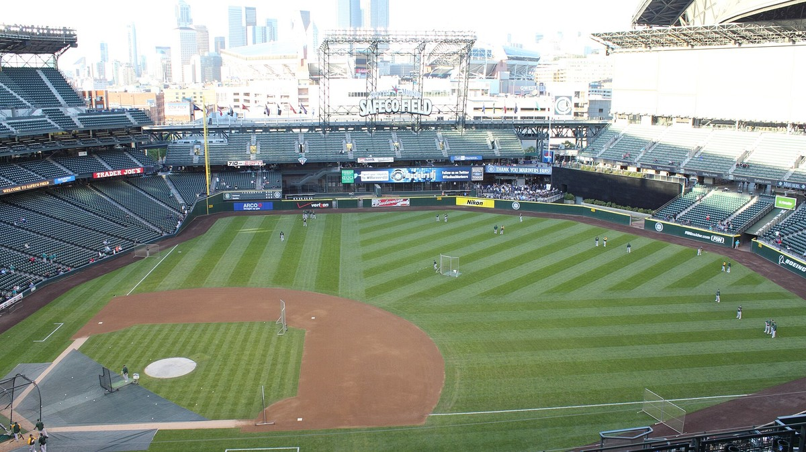
The A's Finished 64 and 98, the Kids Are Hurt, and I'm Still Checking the Box Score
Kurtz, Wilson, Rooker and Soderstrom ended 2026 on the injured list, De Vries had shoulder surgery, and the best young A's core in years is headed to Vegas.

Guardians 5, Athletics 3: Gelof, Then Nothing
Gelof homered in the first, then Joey Cantillo allowed two hits over six and the bullpen gave up the lead in Cleveland. Four straight losses. 61-93.
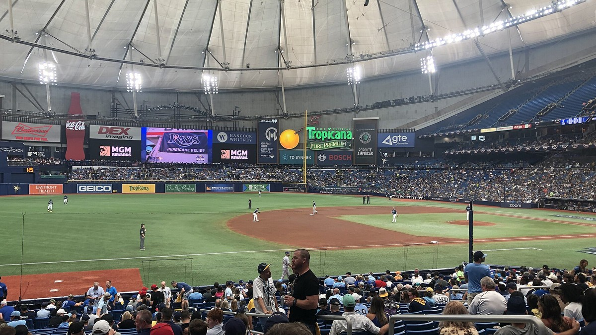
Jack Perkins Threw Six and Two Thirds Scoreless and They Lost Anyway
Rays 2, A's 1 on a walk off. Perkins struck out eight and gave up nothing, the lineup managed four hits, and Kurtz, Rooker and Jacob Wilson are all on the 60 day list.

Two Walk Offs, One 19 to 1 Beating, and I Watched Every Inning
A's 8, Mariners 7 on a Lawrence Butler two run walk off homer. Donovan Walton won Friday in ten, and Saturday's 19 to 1 had Carlos Cortes pitching.

The A's Lost Their Whole Middle of the Order and Got Hot Anyway
Kurtz and Rooker on the 60 day, Langeliers and Soderstrom on the 10 day, the 29th ranked ERA in baseball, and seven wins in the last ten games.
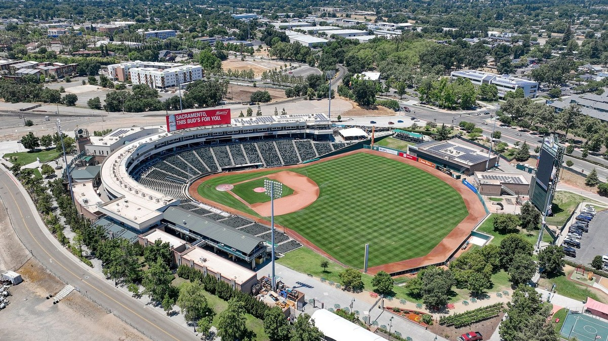
Jeff McNeil Hit a Ground Ball Sixty Feet and We Beat the Blue Jays
A's 6, Blue Jays 5 at Sutter Health Park. Henry Bolte reached four times, Dylan Cease got beat up, Andres Gimenez tied it in the ninth and Jeff McNeil ended it with the bases loaded.
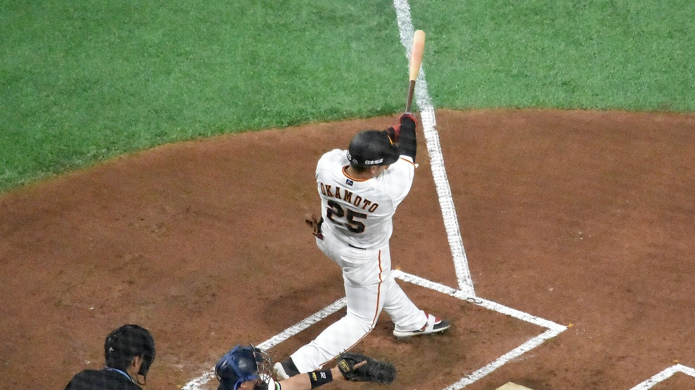
Three Solo Homers Was the Whole Night and Toronto Took the Series
Blue Jays 4, Athletics 2 in 92 degree heat at Sutter Health Park. Kazuma Okamoto hit his thirtieth, and three solo homers were the only offense the A's had.

One Hit in Seattle, and Gage Jump Deserved a Lot Better Than That
Mariners 2, Athletics 0 at T-Mobile Park. Bryan Woo went eight on a Henry Bolte single, Gage Jump struck out seven in four and took the loss, and nobody got past first base.
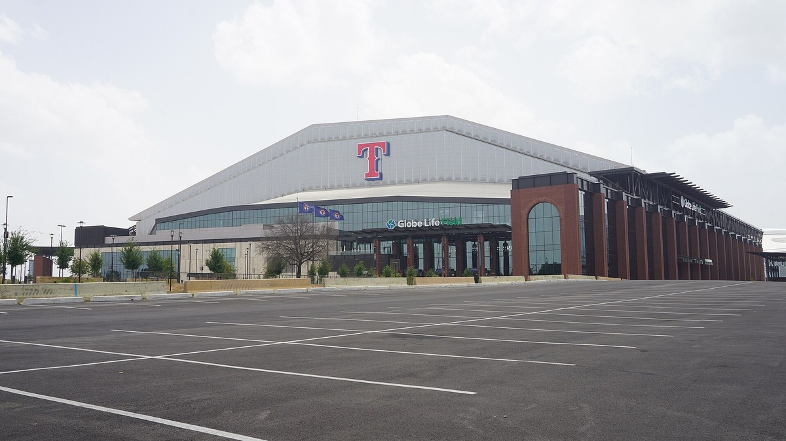
The A's Have Five Hitters on the IL and deGrom Just Made the Leftovers Look Like a Rehab Start
Rangers 8, Athletics 1. One hit over seven innings against deGrom, a fourth straight loss, and Kurtz, Langeliers, Soderstrom, Wilson and Rooker are all hurt at once.
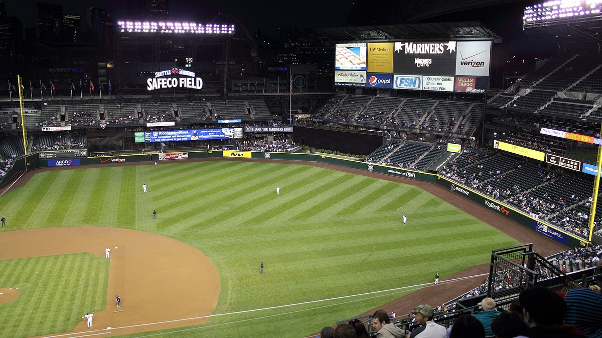
Twins 9, Athletics 6: Rally Falls Short
Jeffrey Springs took his twelfth loss, Minnesota piled up sixteen hits and led 9-1, and a four run ninth got the A's within three. 51-81.

A's 7, Astros 6: Down Six, Somehow Alive
Down 6-0 after four, Brian Serven's homer started a six run fifth and Max Muncy won it in the seventh. 51-80.

A's 4, Astros 3: Win Fifty, on a Wild Pitch and a Ground Out
Jacob Lopez struck out nine in six. Medina gave it back in the seventh. Then the tying run scored on a wild pitch and the winner on a ground out. 50-80.

Royals 6, A's 2: Swept in Four, and Seventeen of Twenty One
Royals 6, Athletics 2: Bobby Witt Jr. homered and scored three, Gage Jump gave up five runs in four innings, and Kansas City finished off a four game sweep.
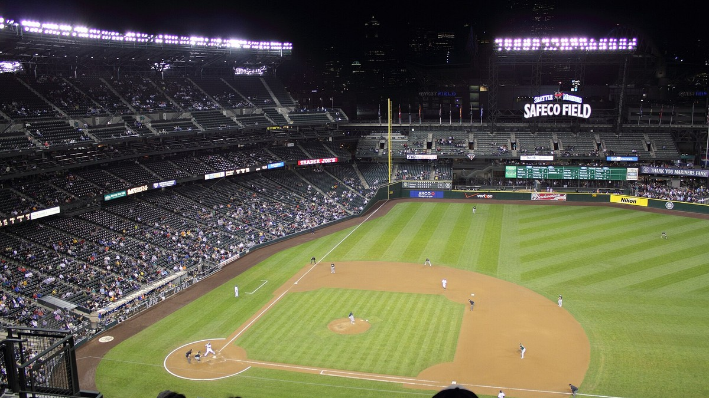
Royals 9, A's 7: A Five Run Lead, Gone in One Inning
They led 5-1 in the eighth and Kansas City scored seven, John Rave clearing the bases. Second blown late lead in two nights. 49-78.

Royals 4, A's 3: A Two Run Ninth Inning Lead, Gone in Ten Minutes
A catcher interference, a bases loaded walk and a Bobby Witt Jr. single ended it. Eight innings of good pitching thrown away in front of 12,009. 49-77.

Rays 12, A's 4: Six Home Runs, Two of Them From a .216 Hitter
Taylor Walls had no homers all season and hit two. Nick Martinez threw a complete game with no walks. Twenty-two runs allowed in two nights. 47-73.

A's 4, Red Sox 3: A Series Win, Their First Since Mid-June
Max Muncy doubled off the Monster against Chapman in the ninth. Jeff McNeil got his 1,000th hit. Jacob Wilson set a major league record for shortstops.

Sutter Health Park: What It Is Like When MLB Plays in a Triple-A Yard
Sutter Health Park by the numbers: capacity 14,014, the dimensions, the wind, and why it produces the second-highest home run rate in Major League Baseball.

What the Bay Area Actually Lost When the A’s Left Oakland
The Oakland Athletics legacy: three straight titles in the 1970s, the Bash Brothers, the twenty-game streak, and what the Bay Area lost when they left.
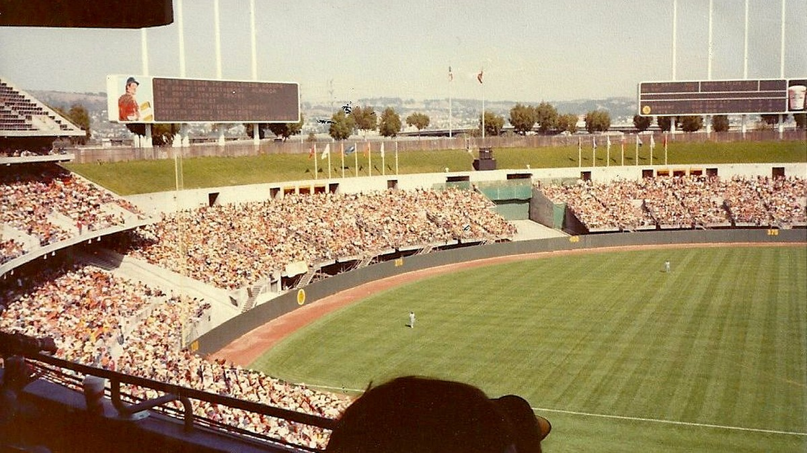
Oakland to Sacramento to Las Vegas: The Whole Timeline
The Athletics relocation timeline: leaving Oakland, the West Sacramento years, and the $2 billion Las Vegas ballpark tracking toward a 2028 opening.

The Athletics Roster and Depth Chart
A position-by-position look at the Athletics roster: the young core, the rotation, and which players are likely to still be here in 2028.

Red Sox 13, A's 1: Fourteen Strikeouts, Two Hits, and a Ninth Straight Loss
Payton Tolle struck out 14 in six innings without a walk. Oakland had two hits all night. Boston had fifteen. The streak is nine and the record is 45-71.

Reds 3, A's 2: Nine Strikeouts, 87 Pitches, and Kotsay Went to the Bullpen Anyway
Jacob Lopez had solved the Reds. He came out in a tie game. Two singles and a sacrifice fly later it was over. Seventh straight loss, 45-69.

Reds 5, A's 4: They Led in the Eighth and Lost on Wild Pitches. Plural.
The tying run and the winning run both scored without Cincinnati putting a ball in play. J.T. Ginn's six-inning return from the blister, wasted. 45-68, and 0-5 since the deadline weekend began.
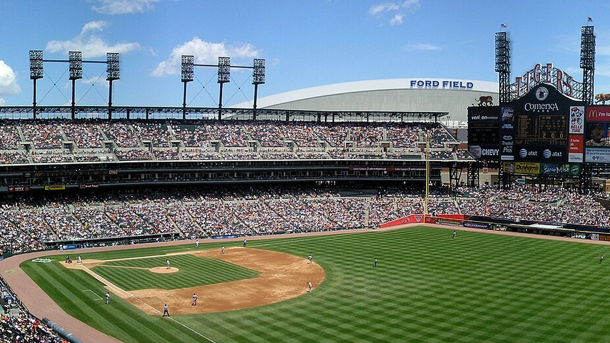
Tigers 11, A's 0: Swept, Shut Out, and Outscored 32-7 in Three Days
Gage Jump walked six and did not finish the fourth, Detroit added four in the eighth, and a position player pitched the ninth. Five straight losses, 45-67, and a weekend they were outscored 32-7.

The A's Free Fall Never Actually Stopped: 45-63, Fourth Place, and a Trade Deadline That Can't Come Soon Enough
Nine losses in a row was supposed to be the bottom. Instead the A's have gone 4-8 since, sitting 18 games under .500 with Monday's trade deadline arriving right on schedule.

Red Sox 4, Athletics 2 (10): Jacob Lopez Deals, the Offense Sleeps, Extras Bite Again
Lopez strikes out eight, Heim and Butler crush solo homers, and nothing else happens for ten innings. Monasterio's two-run shot in the tenth ends it. A's fall to 45-63.

Athletics 4, Red Sox 3: Brian Serven's Homer Holds Up, Tommy White Goes 4-for-4
Gage Jump goes six scoreless, Serven's two-run homer breaks it open, and Tommy White goes 4-for-4. Hogan Harris survives a two-run ninth. A's improve to 45-62.

Red Sox 4, Athletics 2: Ceddanne Rafaela's First Career Slam Beats a Costly No-Hit Bid
Jack Perkins carries a one-hit bid into the sixth before Rafaela's grand slam breaks it open. Soderstrom and Heim homer in the loss. A's fall to 44-61.

Twins 11, Athletics 8: Down 7-0 Before Springs Left Hurt, and the Hole Was Just Too Deep
Jeffrey Springs exits early with an apparent injury, Kurtz's three-run homer sparks a real comeback, but it falls short. A's drop the rubber match, fall to 44-60.
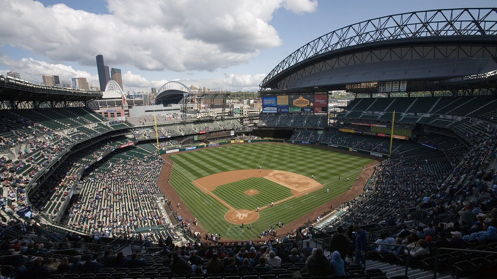
A's 2, Twins 0: Jacob Lopez Deals, Four Relievers Slam the Door
One hit allowed in five innings from Lopez, one more in four from the bullpen. Butler and Soderstrom drove in the only runs the A's needed. A's improve to 44-59.

Diamondbacks 15, A's 5: The Fifth Inning Went On Long Enough To Grow a Beard
Five Arizona homers, a seven-run fifth, and a reliever who gave up eight earned runs while getting two outs. Sacramento loses the series at 43-59.

The A's Stole One Back in the Ninth and Then Walked It Away in the Tenth
Jacob Wilson tied it with two outs in the ninth, Jonah Heim put them ahead in the tenth, and Luis Medina walked two with nobody out. Diamondbacks 6, A's 5.

The A's Out-Hit the Nationals and Lost 5-2, Because of Course They Did
One day after hanging 15 on Washington, the A's out-hit the Nationals 11-7, scored twice, and lost the series at home as Abrams and Crews went back-to-back in the fifth.

The A's Just Beat Somebody 15-1, and I Checked the Box Score Three Times to Be Sure
One night after the 23-4 humiliation, JT Ginn took a no-hitter into the seventh, Wilson, Soderstrom and Cortes homered, and the 10-game losing streak is dead.

Nationals 23, A's 4: Oakland Opens the Second Half With an Embarrassing Blowout
Washington hung 23 runs in West Sacramento, Gage Jump got shelled, and Andres Chaparro homered twice. Soderstrom and Langeliers went deep for the only bright spots in a wipeout.

A's at the All-Star Break: 41-55, a Nine-Game Skid, and the Mirage I Warned You About
First place to fourth, eight games back, losers of nine straight into the break. The full first-half breakdown of the collapse, the Sacramento backdrop, and why the second half only gets uglier.

I Told You the A's Were a Mirage: Nine Straight Losses, 9-1 to the White Sox, and No Bottom in Sight
A 9-1 beating in Chicago drops them to nine in a row, 1-9 in their last ten, a 7.09 ERA and 41-53. This was always coming, and there is no reason to think it stops.
A's in the Bay Area Hall of Fame
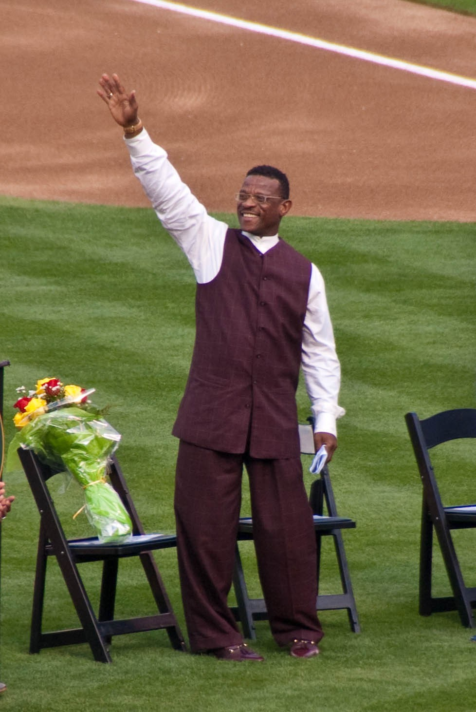
A'sRickey Henderson
Man of StealDennis Eckersley
Eck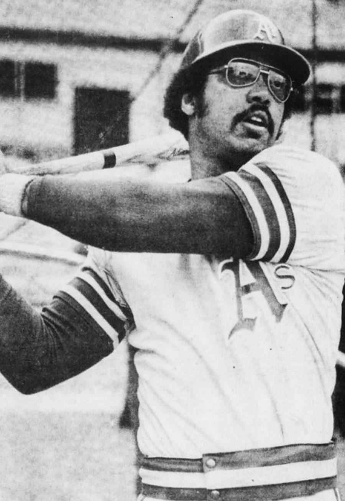
A'sReggie Jackson
Mr. October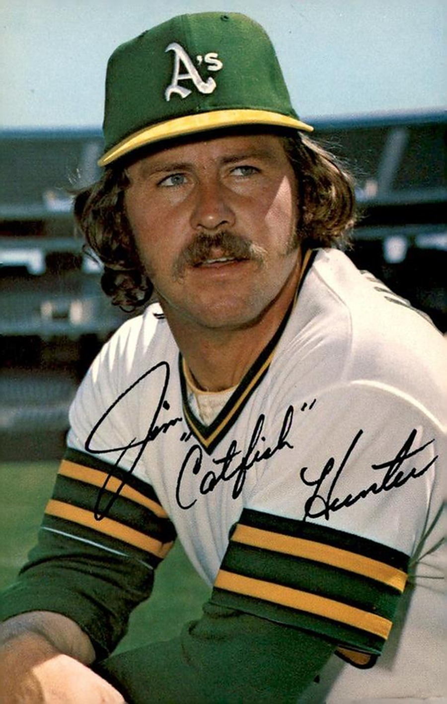
A's